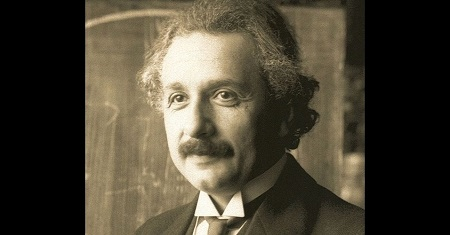
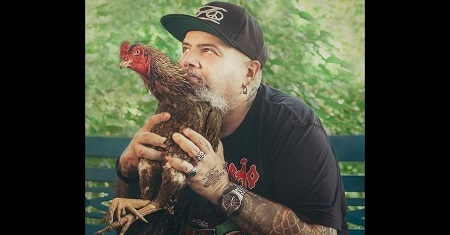
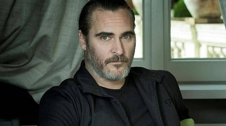
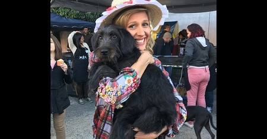
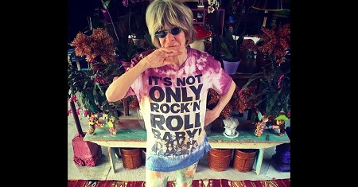
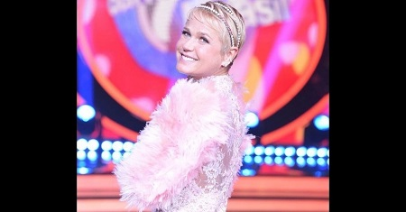

Planeta Vegano
A revolução pode acontecer

Coleção de imagens, para admiração e reflexão.
Pessoas que contribuiram e contribuem pela causa:
Albert Einstein: Albert Einstein, um dos cientistas mais conhecidos de todos os tempos, disse uma vez: “Nada beneficiará mais a saúde humana e aumentará mais as chances de sobrevivência da vida na Terra quanto a evolução para uma dieta vegetariana”.
João Gordo: Comer sempre foi um dos prazeres da vida de João Gordo. Nos últimos 14 anos, ele resolveu estender esse entusiasmo para o preparo de alguns pratos. Mas detalhe: na cozinha do chef João Gordo não entra nada, absolutamente nada de carnes. No Altas Horas deste sábado (19/11), o integrante da banda Ratos de Porão revela estar se saindo bem na "nova área", inclusive, arrastando alguns amigos carnívoros para sua nova cozinha. “Estou influenciando muita gente a virar vegetariano. As pessoas me escrevem, me param nas ruas”, diz ele, que há dois anos também tenta ser vegano.
Joaquin Phoenix:Com certeza, você ouviu falar muito sobre Joaquin Phoenix nos últimos meses.Seja pelo seu papel irretocável em “Coringa” ou por seus discursos fundamentais sobre veganismo, racismo, mudanças climáticas e inúmeras outras pautas pontuais, o fato é que o nome do ator vegano está cada dia mais popular.Sobretudo, nós, da Vegano Shoes, sabemos o quanto é importante uma personalidade tão notória utilizar parte de toda a sua influência para dialogar e conscientizar pessoas sobre temas urgentes.
Luisa Mell:Luisa Mell tem 1,6 milhão de seguidores no Instagram e 2,7 milhões no Facebook. Em vez de postar looks do dia, fotos do corpo em forma ou compartilhar imagens de suas férias perfeitas, a ativista faz, diariamente, postagens em defesa dos bichos. Ela ajuda a encontrar cachorrinhos e gatinhos perdidos, denuncia crimes contra os animais e faz campanhas para a adoção de pets. Luisa também resgata animais feridos e em situação de risco e os abriga no Instituto Luisa Mell, fundado em 2015, com capacidade para 300 bichinhos. Depois de tudo isso, podemos dizer que é Luisa quem salva os animais, certo? ERRADO! E quem conta o porquê é a própria ativista no livro escrito por ela, "Como os Animais Salvaram a Minha Vida", lançado este mês pela Globo Livros.
Rita Lee:A eterna vocalista dos Mutantes é engajada no veganismo, inclusive fez uma música contra os rodeios, chamada “Odeio Rodeio”, evento que causa sofrimento aos animais.
Xuxa:Aos meus 13 anos parei de comer carne bovina, aos 24 frango e aos 54 peixe... sei que ainda não sou vegana, pois minha vestimenta esconde o sofrimento de muitos animais... mas estou feliz em poder dividir com vcs mais um passo importante na minha vida... quero e vou respeitar a todos que escolhem o que comer diariamente e espero tb ser respeitada por não querer comer mais nenhum animal
